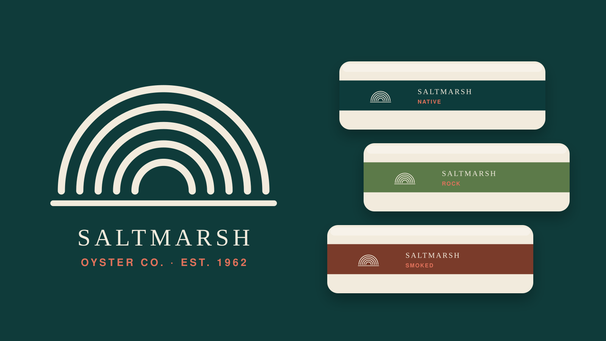
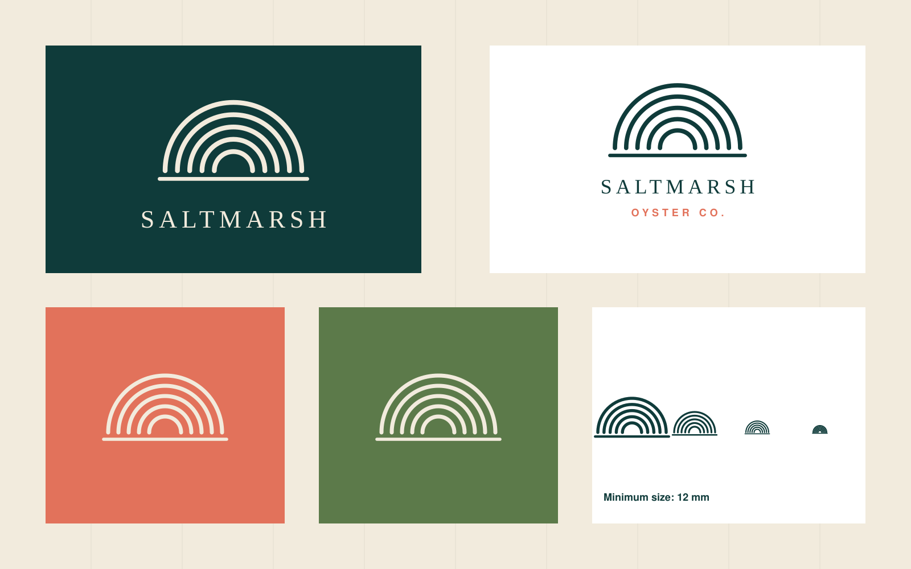
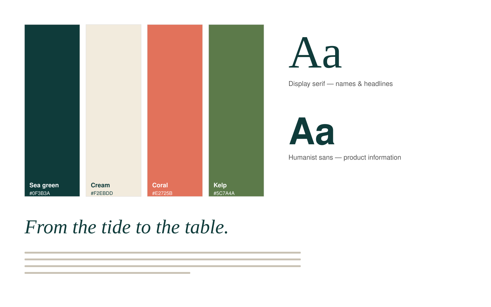
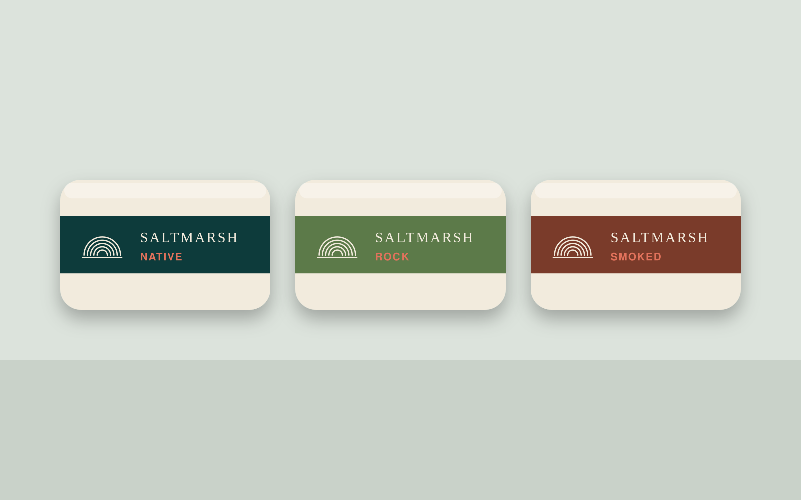
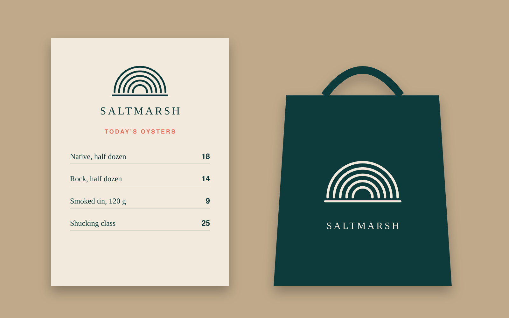
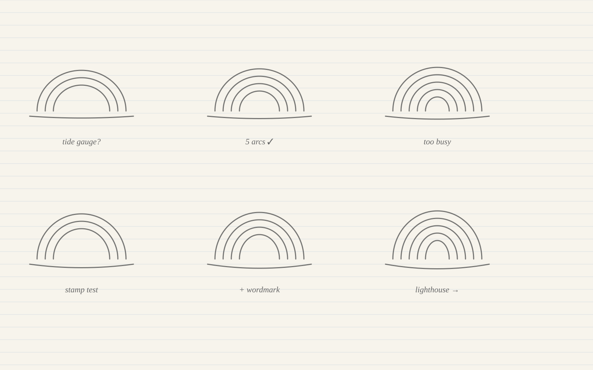
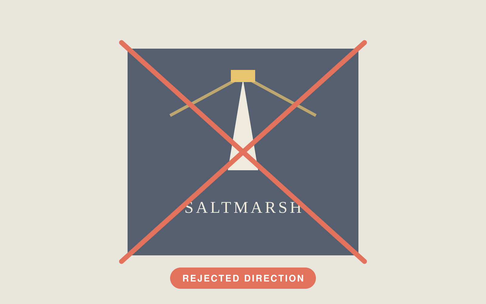

Work / Saltmarsh Oyster Co.
Brand Identity · Packaging · 2025
Saltmarsh Oyster Co.
A tidal identity and tinned-oyster range for a family farm moving from wholesale into delis and restaurants.
- Client
- Saltmarsh Oyster Co.
- Industry
- Food & aquaculture
- Year
- 2025
- Role
- Lead designer — identity, packaging, print
- Collaborators
- Placeholder: copywriter
Placeholder: packaging printer - Deliverables
- Logo and mark
Type and colour system
Tin range (3 SKUs)
Menus and price lists
Brand guidelines

The challenge
The farm's oysters were sold unbranded to wholesalers. To sell directly to delis and restaurants they needed a recognisable name on the shelf and a system that could stretch from a 120 g tin to a market-stall banner.
Audience & constraints
Deli buyers and chefs who already know the product, plus shoppers meeting it for the first time on a shelf of imported tins.
- Two-colour print on the tins to keep unit cost down
- Labels had to survive refrigeration and condensation
- Six-week timeline before the summer market season
Creative direction
The tide became the organising idea: concentric arcs that read as both an oyster shell and a tidal gauge. A narrow serif carries the farm's heritage while a sturdy sans handles product information.
Key decisions
- Shell mark built from five arcs so it can be drawn by a single-colour stamp
- Sea green and cream as the fixed pair; coral reserved for limited editions
- Product information on a modular label grid shared by every SKU
The system
- Typography
- Display serif for the name, humanist sans for information
- Logo behaviour
- Full lockup, stacked lockup and stand-alone shell mark with a minimum size of 12 mm
- Grid
- 4-column label grid; 6 mm safe area on tins
- Sea green
#0F3B3A - Cream
#F2EBDD - Coral
#E2725B - Kelp
#5C7A4A
Applications




Process material


Outcome
Placeholder: add the real launch context and any measured result supplied by the client (for example stockists signed or sell-through). No results are claimed in this sample.
Client testimonial
Testimonial placeholder
Add a real quote from a client about the Saltmarsh Oyster Co. project. Do not publish invented praise.